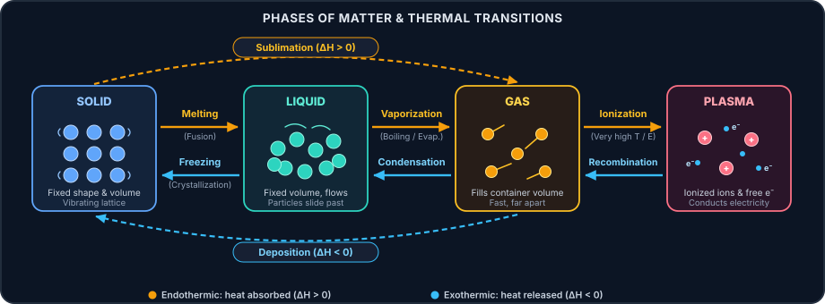

Chemistry · Lesson 10 · Matter & Energy
States of Matter: Motion Makes the Difference
Every substance is built from particles in perpetual motion. Explore how thermal kinetic energy competes against intermolecular attraction to produce solids, liquids, gases, and plasma—without changing the identity of the molecules themselves.
1. Observe before you name
Every macroscopic phase you see comes from a tug-of-war between two microscopic effects: intermolecular attractions pulling particles together and thermal kinetic energy pushing them apart.
Fixed shape and volume. Attractions win; particles vibrate around locked crystal lattice positions.
Fixed volume, fluid shape. Particles stay close and continuously break and reform neighbor contacts.
No fixed shape or volume. Kinetic energy wins; fast particles spread across the entire container.
Extreme energy strips valence electrons from atoms, creating positive ions (+) and free electrons (e⁻).

2. Molecular dynamics chamber & speed distribution
Change the substance, adjust temperature, or compress the piston. Watch how particle spacing and collisions shift—and notice on the Maxwell–Boltzmann curve that particles at any single temperature travel across a wide range of speeds.
At 20 °C (293 K), Water (H₂O) is a liquid: particles stay close together under cohesive attractions while sliding past one another to take the container shape.
Hydrogen bonds give H₂O unusually high melting (0 °C) and boiling (100 °C) points for its small molar mass.
3. Where does the heat go? (Latent heat & heating curve)
Adding thermal energy does not always raise temperature. On the sloped segments, heat speeds particles up (increasing average kinetic energy). On the flat plateaus, temperature pauses while added energy breaks intermolecular attractions (increasing potential energy).
All crystal bonds are broken. Added thermal energy increases molecular kinetic speed from 0 °C to 100 °C.
| Stage | Constant | Energy Change for 1.0 g |
|---|---|---|
| Warming solid ice (−25 °C → 0 °C) | cice ≈ 2.10 J/(g·K) | 52.5 J |
| Melting plateau at 0 °C (Fusion) | ΔHfus = 334 J/g | 334 J |
| Warming liquid water (0 °C → 100 °C) | cwater ≈ 4.18 J/(g·K) | 418 J |
| Boiling plateau at 100 °C (Vaporization) | ΔHvap = 2,260 J/g | 2,260 J |
4. Pressure–temperature (P–T) phase diagram explorer
Temperature is only half of the story—pressure shifts phase boundaries too. Click or drag directly inside the diagram to see why dry ice (solid CO₂) sublimates at room pressure while ice can melt under extreme pressure.
Liquid — Water (H₂O) at 20.0 °C and 1.00 atm: Inside the liquid stability window between the melting and vaporization boundaries.
Note on water's melting slope: The leftward tilt of H₂O's solid–liquid boundary is visually amplified here so the anomaly is easy to observe; because ice is less dense than liquid water, high pressure favors the denser liquid phase.
5. Predict → test → explain
- Compare attractions across substances. In Sim 2, switch between Water and Argon at 20 °C. Why is water a liquid while argon is a fast-moving gas at the exact same temperature?
- Test piston compression. Set Water to Gas (160 °C) and drag Piston Volume from 100% down to 40%. How do collision frequency and chamber pressure respond?
- Contrast melting and boiling energy. In Sim 3, compare the length of the 0 °C melting plateau (334 J/g) with the 100 °C boiling plateau (2,260 J/g). Why does boiling require nearly seven times more energy?
- Compare dry ice and water at 1 atm. In Sim 4, switch to CO₂ and trace the horizontal
1 atmdashed line from −100 °C to +40 °C. Why does liquid CO₂ never form on an open lab bench?
Compare your explanations
1. Water's hydrogen bonds are far stronger than argon's weak dispersion forces, so at 20 °C water particles lack enough kinetic energy to break free completely. 2. Compressing gas to 40% volume packs particles 2.5× closer, causing 2.5× more frequent wall collisions and proportionally higher pressure (Boyle's law). 3. Melting only loosens a rigid lattice into sliding neighbors, whereas boiling must completely separate molecules against attractions and expand against atmospheric pressure. 4. CO₂'s triple point lies at 5.11 atm, so at 1 atm the substance crosses straight from solid to gas (sublimation at −78.5 °C).
Read further: Water: The Architecture of H₂O · Atoms: Structure, Motion, and Matter · OpenStax Chemistry: Phase Diagrams
6. Check your understanding
Easy1. When liquid water boils into steam at 100 °C, what happens to the H₂O molecules themselves?
Easy2. Why can a gas be compressed easily inside a piston while a solid or liquid resists compression?
Medium3. While water in an open pot at 1 atm is actively boiling, you turn up the burner flame. What happens to the water's temperature while liquid and steam coexist?
Medium4. Carbon dioxide (CO₂) has its triple point at 5.11 atm and −56.6 °C. What happens when solid CO₂ ("dry ice") warms up on a table at 1 atm?
Challenge5. Using ΔHfus = 334 J/g for water, how many joules (J) are required to completely melt 10 g of ice that is already at 0 °C?